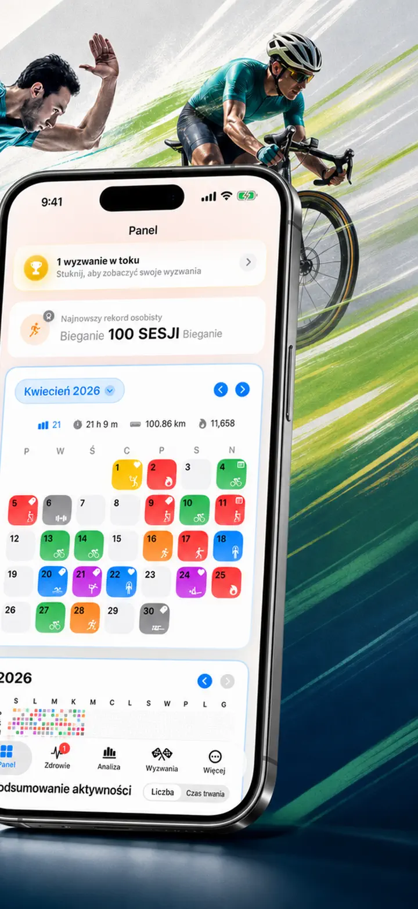
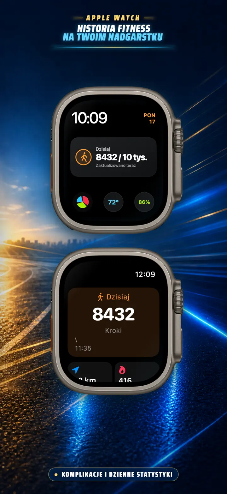
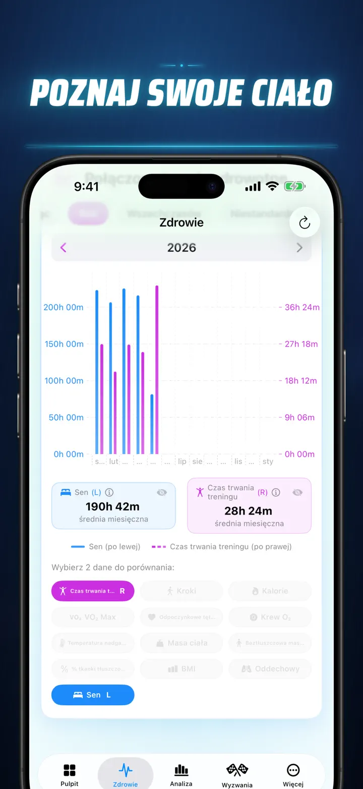
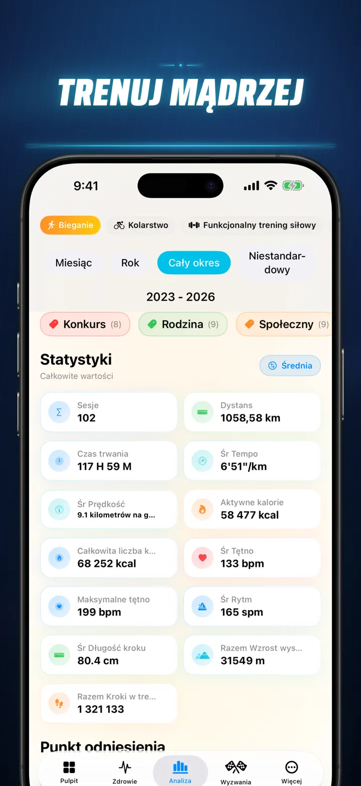
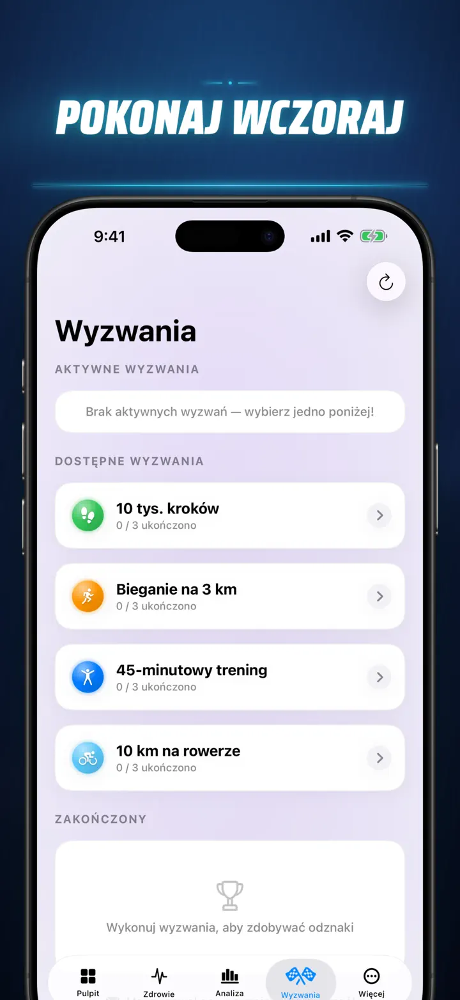
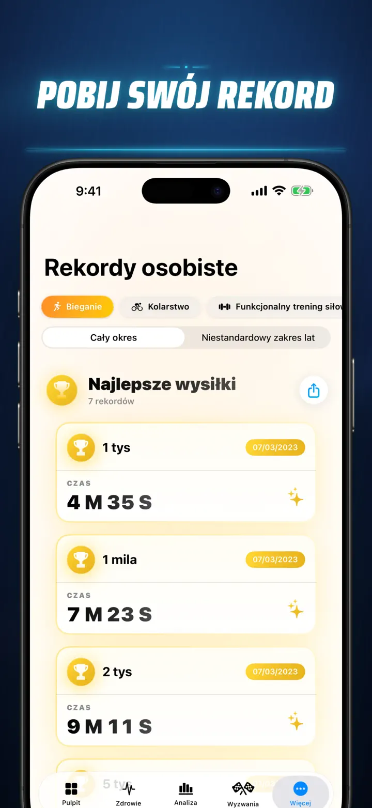
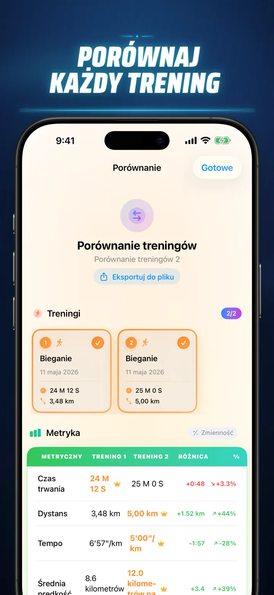
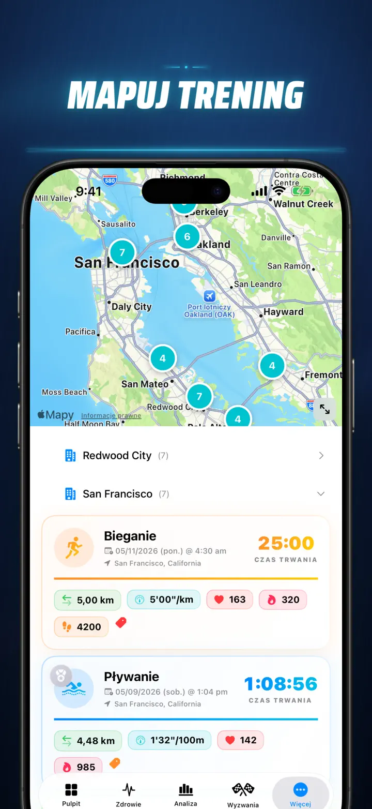
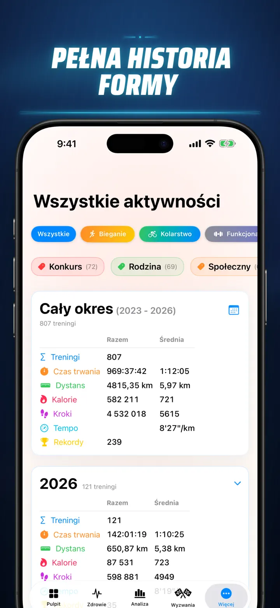

Historia Fitness
Trening, dane i wyzwania
Już na Apple Watch: dzisiejsze kroki na dowolnej tarczy, a do tego ekran Dzisiaj z dystansem, kaloriami i piętrami — prosto z Apple Zdrowie.
Pobierz w App StoreO aplikacji
Przestań zgadywać. Zacznij wiedzieć. Historia Fitness zamienia dane z Apple Zdrowie w szczegółową analizę treningu i zdrowia na iOS. Bez kont. Bez ukrytych serwerów. Tylko cała Twoja droga fitness pokazana w czytelnych wykresach.
Nieważne, czy śledzisz fazy snu, analizujesz kadencję biegu, czy walczysz o życiówkę w maratonie - dostajesz jedno centrum dowodzenia dla pracy, którą już wykonujesz.
Działa z każdym urządzeniem i aplikacją, które synchronizują się z Apple Zdrowie — Apple Watch, Garmin, Polar, Suunto, Zwift i nie tylko.
ANALIZA NA POZIOMIE PRO
- Wykresy trendów i benchmarki: sprawdzaj medianę, kwartyle i wartości odstające dla każdego typu aktywności.
- Szczegółowe filtry: analizuj historię według pory dnia, dystansu, czasu trwania, tempa, przewyższeń, kadencji i długości kroku.
- Rankingi wszystkiego: jednym dotknięciem porównaj dzisiejszy dystans, tempo, tętno i inne metryki z całą historią. Od razu zobaczysz, czy to wynik z Top 15%.
- Wykres aktywności: mapa cieplna w stylu GitHuba pokazuje całą historię treningów i dzienne statystyki po odwróceniu widoku.
SZCZEGÓŁY TRENINGU OD NOWA
- Inteligentne mapy: koloruj trasy według prędkości, wysokości lub stref tętna. Zawiera korektę map dla Chin.
- Głęboka analiza splitów: kilometry lub mile z tempem, wysokością, tętnem i kadencją dla każdego okrążenia.
- Strefy tętna: wizualizuj czas w strefach 1-5 na podstawie wieku i tętna spoczynkowego.
- Bogaty kontekst: dodawaj zdjęcia, notatki z formatowaniem, ocenę wysiłku 1-10 i własne tagi do każdego treningu.
CENTRUM ZDROWIA
- Wszystko, co mierzy Apple Watch, w jednym miejscu z trendami dziennymi, tygodniowymi i rocznymi.
- Serce i wydolność: tętno spoczynkowe, VO2 Max, saturacja i częstość oddechu.
- Skład ciała: masa ciała, procent tkanki tłuszczowej, beztłuszczowa masa ciała i BMI z trendami.
- Aktywność i regeneracja: kroki z podziałem godzinowym, kalorie aktywne i bazowe oraz odchylenia temperatury nadgarstka.
- Zaawansowany sen: fazy głębokie, core, REM i wybudzenia pokazane noc po nocy.
- Korelacje: nakładaj metryki zdrowotne i zobacz, jak sen wpływa na tętno, a masa ciała na VO2 Max.
PORÓWNUJ I RYWALIZUJ
- Porównuj do 10 treningów obok siebie, metryka po metryce i split po splicie.
- Eksportuj porównania do własnych narzędzi analitycznych.
- Automatycznie śledź rekordy na 1K, 5K, 10K, półmaraton, maraton i własne dystanse.
- Oglądaj oś czasu z kamieniami milowymi, rekordami i ukończonymi treningami.
TWOJE DANE, WSZĘDZIE
- Globalna mapa: wszystkie miejsca treningu na interaktywnej mapie świata.
- Mocny eksport: historia lub własny zakres do CSV albo JSON, razem ze splitami, metrykami ciała i metadanymi.
- iCloud Sync: ulubione, tagi, notatki i oceny synchronizują się między urządzeniami.
- Prywatność przede wszystkim: Twoje dane zostają u Ciebie.
Twój wysiłek opowiada historię. Czas ją przeczytać. Pobierz Historia Fitness już dziś.
Privacy Policy: https://masawata.net/privacy-policy.html Terms Of Service: https://www.apple.com/legal/internet-services/itunes/dev/stdeula/
Zrzuty ekranu









Historia Fitness
Już na Apple Watch: dzisiejsze kroki na dowolnej tarczy, a do tego ekran Dzisiaj z dystansem, kaloriami i piętrami — prosto z Apple Zdrowie.
Pobierz w App Store